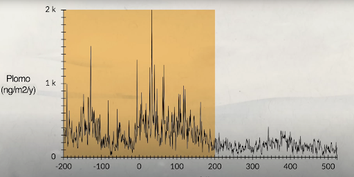
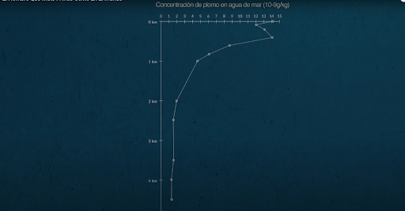

<!DOCTYPE html>
<html lang="en">
<head>
    <meta charset="UTF-8">
    <meta name="viewport" content="width=device-width, initial-scale=1.0">
    <title>Document</title>
</head>
<body>
    
</body>
</html><!DOCTYPE html>
<html lang="es">
<head>
    <meta charset="UTF-8">
    <meta name="viewport" content="width=device-width, initial-scale=1.0">
    <title>Capítulo 2: Gases Contaminantes - Proyecto MCI</title>
    <link rel="stylesheet" href="style.css">
    <link href="https://fonts.googleapis.com/css2?family=Inter:wght@300;400;700&family=Playfair+Display:wght@700&display=swap" rel="stylesheet">
</head>
<body>
    <header>
        <div class="container">
            <h2>Capítulo 2</h2>
            <h1>Gases Contaminantes: El Impacto en la Salud y el Ambiente</h1>
        </div>
    </header>

    <main class="container">
        <section>
            <h2>La Combustión Incompleta</h2>
            <p>En un mundo ideal, un motor solo emitiría CO<sub>2</sub> y Vapor de Agua. Sin embargo, la realidad técnica nos entrega subproductos peligrosos:</p>
            
            <div class="table-container">
                <table>
                    <thead>
                        <tr>
                            <th>Contaminante</th>
                            <th>Causa Principal</th>
                            <th>Impacto</th>
                        </tr>
                    </thead>
                    <tbody>
                        <tr>
                            <td><strong>CO (Monóxido)</strong></td>
                            <td>Falta de O<sub>2</sub> (Mezcla rica)</td>
                            <td>Asfixia química; reduce transporte de O<sub>2</sub>.</td>
                        </tr>
                        <tr>
                            <td><strong>NOx (Óxidos Nitrógeno)</strong></td>
                            <td>Calor extremo (>1800 K)</td>
                            <td>Smog fotoquímico y lluvia ácida.</td>
                        </tr>
                        <tr>
                            <td><strong>HC (Hidrocarburos)</strong></td>
                            <td>Combustible mal quemado</td>
                            <td>Cancerígenos y precursores de ozono.</td>
                        </tr>
                        <tr>
                            <td><strong>PM (Partículas)</strong></td>
                            <td>Hollín y cenizas (Diésel)</td>
                            <td>Daño cardiovascular y pulmonar grave.</td>
                        </tr>
                    </tbody>
                </table>
            </div>
        </section>

        <section>
            <h2>La Paradoja de los NOx</h2>
            <p>Aquí reside el gran dilema de la ingeniería automotriz:</p>
            <blockquote class="paradox-box">
                Para que un motor sea eficiente (Carnot), necesitamos <strong>Temperaturas Altas</strong>. <br>
                Pero las temperaturas altas son la "fábrica" perfecta de <strong>NOx</strong>.
            </blockquote>
            <p class="formula">N<sub>2</sub> + O<sub>2</sub> + Calor (>1800 K) → 2NO</p>
        </section>

        <section>
            <h2>El Plomo: Un Veneno Acumulativo</h2>
            <p>El plomo imita al calcio en nuestros huesos, lo que lo hace casi imposible de expulsar. No existe un nivel seguro de exposición.</p>
            
            <div class="grid-laws">
                <div class="law-card" style="border-top-color: var(--accent-red);">
                    <h3>Efectos en Niños</h3>
                    <ul>
                        <li>Reducción del CI (IQ).</li>
                        <li>Daño cerebral irreversible.</li>
                        <li>Pérdida auditiva.</li>
                    </ul>
                </div>
                <div class="law-card" style="border-top-color: var(--accent-red);">
                    <h3>Efectos en Adultos</h3>
                    <ul>
                        <li>Hipertensión arterial.</li>
                        <li>Daño renal permanente.</li>
                        <li>Anemia y cólico saturnino.</li>
                    </ul>
                </div>
            </div>
        </section>

        <section>
            <h2>Evidencia Gráfica del Impacto</h2>
            
            <div class="media-container">
                <div class="chart-box">
                    
                    <p class="caption">Evolución de los niveles de plomo en sangre en los últimos 2200 años.</p>
                </div>

                <div class="chart-box">
                    
                    <p class="caption">Aumento drástico de la concentración de plomo en el agua de mar.</p>
                </div>
            </div>
        </section>

        <div style="text-align: center; padding: 40px;">
            <a href="index.html" class="btn-back">← Volver al Panel de Control</a>
        </div>
    </main>

    <footer>
        <p>&copy; 2026 - Angel Alfredo Villarreal Alvarado | 7mo 3er Automotores</p>
    </footer>

    <script src="script.js"></script>
</body>
</html>